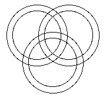
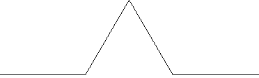
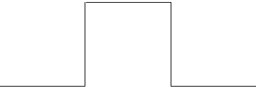
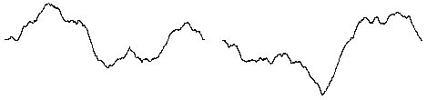

Labs for The Most Complex Machine
xTurtle Lab 3: Subroutines and Recursion
SUBROUTINES WERE INTRODUCED in the previous lab. This lab will continue the study of subroutines. The lab concentrates on the idea of a subroutine as a black box and on recursive subroutines that call themselves, either directly or indirectly.
You should be familiar with the material from Chapter 7 of The Most Complex Machine, especially with the material on recursive subroutines from Section 3. The Koch curve and the binary tree introduced in that section will be used in the lab.
This lab includes the following sections:
Start by clicking this button to launch xTurtle in its own window:
(For a full list of labs and applets, see the index page.)
Black Boxes
You are familiar with the idea of a subroutine as a black box. When you use predefined subroutines such as forward and moveTo, you don't need to know exactly how they work. All you need to understand is how to use them and what they will do. User-defined subroutines can also be used as black boxes, provided that someone else has written them for you.
The xTurtle applet that you launched for use in this lab is set up to load a sample program called "SymmetrySubs" This program contains the definitions of six subroutines for drawing symmetric pictures. These subroutines are meant to be used in the same way as the usual drawing subroutines such as forward and circle. For example, one of the subroutines defined in "SymmetrySubs" is multiForward. This subroutine is similar to the built-in forward command, except that instead of just drawing one line, it draws eight lines in a symmetrical pattern. The "SymmetrySubs" program defines the following six subroutines, each of which draws a symmetric pattern: multiForward, multiBack, multiMoveTo, multiMove, multiCircle, and multiArc.
To see how this works, select the "SymmetrySubs" program from the pop-up menu at the top of the xTurtle applet, and use the "Run Program" button to run the program. Nothing appears on the screen, since all the program does is define some subroutines. However, once the subroutines are defined, you can use them as commands, just as you would use any of xTurtle's built-in commands.
As an example, type the following commands into the text-input box below the xTurtle drawing area, pressing return after you enter each command:
multiArc(5,40) turn(-40) multiforward(3) multicircle(2)Also try some other commands. If you want to make a more complicated picture, go back to the "SymmetrySubs" program and add your commands at the end of that program (after the definitions of all the subroutines). For example, add the following commands to the end of the program, and then hit the "Run Program" button:
LOOP multiforward(0.5) face(randomInt(360)) EXIT IF 1=2 END LOOPYou will have to end the program with the "Stop" button. (The statement "exit if 1=2" in this program is a fancy way of saying "Never exit.")
In the previous part of the lab, you used several subroutines as black boxes, without having to understand what went on inside the box. But you should remember that "not having to know what's inside" is only part of the black box story! When you write a subroutine yourself, you are working inside the box. While you are writing the subroutine, you can concentrate on making it perform the specific task it is designed to do, without worrying for the moment exactly what role it will play in a complete program. From the point of view of a programmer trying to design a complex program, subroutines are a tool for breaking a complex problem down into smaller, more manageable subproblems.
Recursive Trees and Recursive Walks
A recursive subroutine is one that calls itself. A recursive subroutine is a black box that uses itself as a black box. Section 7.3 in the text introduces recursive subroutines using the example of a binary tree. The program for this example is in the Sample program "BinaryTrees". Select this program from the pop-up menu at the top of the xTurtle applet and run it. Nothing will happen, since the file only defines some subroutines. The main subroutine defined in the file is called TestTree. If you enter this into the text-input box beneath the drawing area of the applet, you will be asked to specify a complexity level. The computer will draw a tree with the complexity that you specify. Try this, for example, for a complexity level of 5.
A binary tree of complexity zero is defined to be a single straight line segment. A binary tree of complexity greater than zero is defined to consists of a "trunk," which is just a line segment, with two "branches" attached to it. Each of the branches is a binary tree, which is smaller than the complete tree and which has smaller complexity than the complete tree. This is a recursive definition because we are saying that a tree contains pieces which are themselves trees. Because binary trees are defined recursively, they can be drawn by a recursive subroutine. You should try to understand the definition of the Tree subroutine.
A second example of recursion is contained in the sample program "KochCurves." This example is also taken from Section 7.3 in The Most Complex Machine. A Koch curve is a way of getting from one point to another -- with a lot of detours. To help you understand this, run the sample program "KochCurves." After you have run the program, you can use the command TestKoch in the xTurtle applet's text-input box. When you do so, you will be asked to specify a complexity level for the Koch curve. You should try complexity levels of 0, 1, 2, 3, and 4.
A Koch curve of complexity 0 is defined to be a straight line segment. A Koch curve of complexity 1 is a line segment with a "bump" or "detour." The complexity-one curve is made up of four line segments, but you should think of each line segment a Koch curve of complexity zero. A Koch curve of complexity 2 is obtained from the curve of complexity 1 by adding a detour to each line segment in the curve. You should look at a Koch curve of complexity 2 as being made up of four smaller pieces, where each piece is a Koch curve of complexity 1. More generally, a Koch curve of complexity N is made up of four smaller Koch curves of complexity N-1. Once again, this is a recursive definition, and the subroutine that draws Koch curves is a recursive subroutine. Try to understand how the pictures you see are produced by the Koch subroutine.
The "KochCurves" program also defines a subroutine named "Snowflake" which draws "Koch snowflakes." A Koch snowflake is made by joining three Koch curves together at their endpoints, producing a symmetric, snowflake-like picture. Try it!
Exercises
Exercise 1: Add the following lines to the end of the "SymmetrySubs" sample program, after all the subroutines. Run the program a few time, to see what it does. The write a short essay explaining exactly how the program works and why it produces the pictures that it does. (Try running this at fastest speed, with the turtle turned off.)
declare x x := 0 loop face(360*random) hsb(x,1,1) multiforward(0.4) x := x + 0.005 if x > 1 then x := 0 end if exit if 1 = 2 end loopExercise 2: The mathematics used in the subroutines defined in "SymmetrySubs" is not trivial. How much did you need to know about this mathematics to use the subroutines? What point about subroutines does this illustrate?
Exercise 3: The Speed pop-up menu in the xTurtle applet works by inserting delays betweens commands. Since circle is a single command, a complete circle is drawn instantaneously, no matter what the setting of the speed menu. This disappointed one of my students, who wanted to be able to watch the circles being drawn. Write a subroutine
SUB SlowCircle(radius)that will draw a circle by drawing 60 arcs, where each arc covers 6 degrees. Then use your subroutine to (slowly) draw a picture like the following:

Exercise 4: Modify your subroutine from Exercise 3 so that it draws each of the arcs of the circle in a different color. The color of an arc can be set to hsb(hue,1,1). At the beginning, the value of hue should be zero. After drawing each arc, it should be increased by 1/60.
Exercise 5: A subroutine such as the one you wrote for Exercise 4 can be used in many different programs. What did you have to know about those programs in order to write the subroutine? What does this illustrate about black boxes?
Exercise 6: How many straight line segments are there in a Koch curve of complexity 2? You can use the TestKoch subroutine to draw the curve and them count the line segments. You could do the same for complexity 3, and maybe for complexity 4. But what about complexity 10 or 100? There are two many line segments to count. However, it is possible to predict the number of segments for any complexity, if you think about how Koch curves are created. The question you should ask yourself is, When the complexity is increased by one, what happens to the number of line segments? Try to figure out the pattern by looking at the number of line segments in curves of complexity 1, 2, 3, and 4 and by thinking about what happens as you go from one curve to the next. Try to find a formula that gives the number of line segments in a Koch curve of any given complexity.
Exercise 7: This exercise asks you to find the number of line segments in a binary tree of a given complexity. It is similar to the previous exercise, but it's harder to find a formula in this case. Run the "BinaryTrees" example program, and then use the TestTree subroutine to draw trees of complexity 0, 1, 2, 3, 4, and 5. For each of these trees, count the number of straight line segments that it contains. For example, in a tree of complexity 1, the number of line segments is 3 -- each branch is a single line, and the trunk is the third line. You should try to find a formula that gives the number of line segments for any given complexity. You might not be able to find a formula that gives the number directly, but you should at least be able to find a formula that tells how the number of line segments changes as you go from one complexity level to the next.
One way to approach this problem is first to determine how many new lines are added to the tree when you go from a tree of complexity N to one of complexity N+1. Then use that to figure out the total number of line segments. Another approach is to "think recursively": Remember that a tree of complexity N+1 is made up of a trunk plus two trees of complexity N.
Exercise 8: The text notes that you can add randomness to a Koch curve by deciding randomly whether to detour to the left (using turns of 60, -120 and 60) or to the right (using turns of -60, 120, and -60 instead). Make this change to the program "KochCurves" sample program, and try it out. In the subroutine, you can declare a variable named x (for example) and set x := RandomInt(2). Use the value of x to decide whether to detour to the left or to the right. (When you have made the change, the SnowFlake subroutine will produce a "Koch Island" instead. Try it!)
Exercise 9: The idea of "detouring" used in making Koch curves can be used to make other interesting fractal pictures. In a Koch curve, the idea is to replace a straight line with a line containing a "triangular detour," like this:

Suppose that a "square detour" were used instead, looking like this:

What would the resulting picture look like, for higher degrees of complexity? Find out by rewriting the subroutine Koch to use square detours instead of triangular detours.
Exercise 10: For this exercise, you will write a recursive subroutine that displays an element of randomness. The subroutine will be called "mountain", because it draws pictures that look a bit like a mountain range. Here are two pictures produced by the subroutine:

Each of these pictures was produced with the commands:
clear penUp moveTo(-7,0) penDown mountain(7,0,10)The command mountain(x,y,c) should move the turtle along a jagged path from its current position to the point (x,y). The amount of jaggedness is specified by the "complexity," c. If the third parameter, c, is zero, then mountain(x,y,c) simply draws a straight line from the current position to (x,y). If c > 0, then mountain(x,y,c) will choose a random point, (x1,y1), somewhere between the current position and (x,y). It will draw a "mountain" of complexity c-1 to the point (x1,y1) and from there it will draw a second mountain curve of complexity c-1 to the point (x,y). The trick is to choose the intermediate point (x1,y1). This can be done by finding the midpoint between the current position and (x,y), and then moving the y coordinate of that midpoint up or down by a random amount. This computation can be done as follows, recalling that the current position of the turtle is given as (xcoord,ycoord):
x1 := (xcoord + x) / 2 y1 := (ycoord + y) / 2 y1 := y1 + (random - 0.5) * (xcoord - x)Try to put all this together into a definition of mountain(x,y,complexity). Remember to declare x1 and y1 at the beginning of your subroutine.
This is one of a series of labs written to be used with The Most Complex Machine: A Survey of Computers and Computing, an introductory computer science textbook by David Eck. For the most part, the labs are also useful on their own, and they can be freely used and distributed for private, non-commercial purposes. However, they should not be used as a formal part of a course unless The Most Complex Machine is also adopted for use in that course.--David Eck (eck@hws.edu), Summer 1997